방송통신산업기사 (2003-03-16 기출문제)
1과목: 디지털 전자회로
1. 증폭이득이 60[dB]인 증폭기에서 20[%]의 찌그러짐이 발생했다. 이것을 2[%] 이내로 개선하기 위해서 걸어야 할부궤환은?
- 10[dB]
- 20[dB]
- 30[dB]
- 40[dB]
(정답률: 알수없음)

2. 베이스 변조회로에 대한 설명으로 틀리는 것은?
- 변조에 필요한 전력이 적다.
- 출력에 불필요한 고조파가 생겨 효율이 저하한다.
- 변조회로의 트랜지스터를 C급으로 바이어스 한다.
- 저출력의 변조도가 작은 경우에 사용한다.
(정답률: 알수없음)
3. 그림의 논리회로는 어떤 논리작용을 하는가?
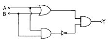
- AND
- OR
- NAND
- Exclusive OR
(정답률: 알수없음)
4. 그림과 같은 연산증폭기의 출력 전압 Vo는?
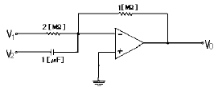
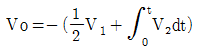
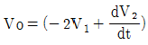
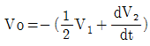
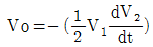
(정답률: 알수없음)
5. 그레이코드 101101을 2진수로 변환하면?
- 110110
- 111011
- 011011
- 111101
(정답률: 알수없음)
6. 접합 트랜지스터의 스읫칭 속도를 빠르게 하기위한 방법으로 적당한 것은?
- 베이스 회로에 직열로 저항을 접속한다.
- 베이스 회로에 인덕턴스를 접속한다.
- 베이스 회로에 저항과 콘덴서를 병열 접속하여 연결한다.
- 베이스 회로에 제너 다이오드를 접속한다.
(정답률: 알수없음)
7. J-K 플립-플롭은 두개의 입력 데이터에 의하여 출력에서 몇개의 조합을 얻을수 있는가?
- 2
- 4
- 8
- ∞
(정답률: 알수없음)
8. 여러 개의 입력 신호 가운데 하나를 선택하여 출력하는 동작을 하는 것은?
- 인코더
- 멀티플렉서
- 디멀티플렉서
- 페리티 체크회로
(정답률: 알수없음)
9. 그림의 증폭 회로에서 S를 단락 시켰을 경우에도 그 값의 변화가 거의 없는 것은 어느 것인가? (단, Re+R1《1/hoe)
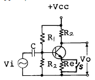
- 증폭기의 입력 저항
- 증폭기의 안정도
- 증폭기의 전류 이득
- 증폭기의 전압 이득
(정답률: 알수없음)
10. 쌍안정 멀티바이브레이터의 결합저항에 병렬로 부가한 콘덴서의 사용 목적은?
- 증폭도를 높인다.
- 스위칭 속도를 높인다.
- 베이스 전위를 일정하게 유지시킨다.
- 에미터 전위를 일정하게 유지시킨다.
(정답률: 알수없음)
11. 다음 부울식을 간소화 할 때 맞는 것은?
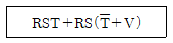
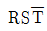
- RSV
- RST
- RS
(정답률: 알수없음)
12. 그림과 같이 증폭기를 3단 접속하여 첫단의 증폭기 A1에 입력전압으로 2[㎶]인 전압을 가했을때 종단증폭기 A3의 출력전압은 몇[V]가 되는가? (단, A1, A2, A3의 전압이득 G1, G2, G3는 각각 60[㏈], 20[㏈], 40[㏈]이다.)
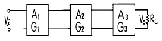
- 20[V]
- 2[V]
- 0.2[V]
- 20[㎷]
(정답률: 알수없음)
13. 반가산기(Half-adder)의 구성 요소로 맞는 것은?
- JK 플립플롭
- 두개의 AND 게이트
- EOR과 AND 게이트
- 1개의 반동시 회로와 OR 게이트
(정답률: 알수없음)
14. 브리지 정류회로에서 교류 220[V]를 정류시킬 때 최대전압은 약 몇[V] 인가?
- 140
- 311
- 432
- 180
(정답률: 알수없음)
15. 논리식
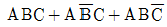
를 가장 간단히 한 것은?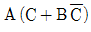
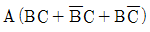
- A(B+C)
- ABC
(정답률: 알수없음)
16. 그림과 같은 발진회로의 적합한 발진조건과 회로명은?
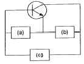
- (a)유도성(b)용량성(c)용량성, 회로명: 콜피츠 발진회로
- (a)용량성(b)유도성(c)용량성, 회로명: 콜피츠 발진회로
- (a)유도성(b)용량성(c)유도성, 회로명: 하틀리 발진회로
- (a)유도성(b)유도성(c)용량성, 회로명: 하틀리 발진회로
(정답률: 알수없음)
17. 트랜지스터의 베이스접지 전류증폭률을 α 라 하면 이미터 접지의 전류증폭률 β 는 어떻게 표시되는가?
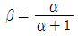
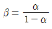
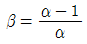
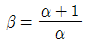
(정답률: 알수없음)
18. 아래에 열거한 항목 중에서 트랜지스터 CE(공통 이미터)증폭기의 입력전압, 입력전류, 출력전압, 출력전류를 올바르게 표시한 항은?
- ① 입력전압 : VBC, ② 입력전류 : IB, ③ 출력전압 : VEC, ④ 출력전류 : IE
- ① 입력전압 : VEB, ② 입력전류 : IE, ③ 출력전압: VCB, ④ 출력전류 : IC
- ① 입력전압 : VEB, ② 입력전류 : IB, ③ 출력전압: VEC, ④ 출력전류 : IC
- ① 입력전압 : VBE, ② 입력전류 : IB, ③ 출력전압: VCE, ④ 출력전류 : IC
(정답률: 알수없음)
19. DC 결합과 AC 결합이 함께 사용되는 회로는?
- 비안정 멀티바이브레이터
- 단안정 멀티바이브레이터
- 쌍안정 멀티바이브레이터
- 블로킹 발진기
(정답률: 알수없음)
20. FM 검파회로로서 사용되지 않는 회로는?
- PLL 검파
- Ratio 검파
- Foster-seeley형 검파
- Collector 검파
(정답률: 알수없음)
2과목: 방송통신 기기
21. 다음 중 MPEG-2에 대한 설명 중 틀린 것은?
- 현행 TV 품질이상 HDTV 품질까지 확장 가능하다.
- MPEG-2 복호기는 MPEG-1 비트열을 복호할 수 없다.
- 순차주사외 비월주사 영상도 취급할 수 있다.
- 저장미디어 뿐만아니라 통신, 방송미디어에 적용되고 있다.
(정답률: 알수없음)
22. 다중방송의 실시목적에 해당되지 않는 것은?
- 주서비스를 고품질화 하기 위해
- 쌍방향통신을 하기위해
- 독립된 새로운 서비스를 하기 위해
- 주서비스를 고급화 하기 위해
(정답률: 알수없음)
23. 다음의 전송매체중 가장 큰 대역폭을 가지는 것은?
- 평형대케이블
- 동축케이블
- 광케이블
- 전이중방식
(정답률: 알수없음)
24. 위성통신의 다원접속방식 중 위성의 송신용과 수신용안테나를 다수의 스팟 빔(spot beam)안테나로 구성하여 각 지구국을 분할하여 지역별로 해당지역을 담당하는 방식은?
- FDMA(Frequency Division Multiple Access)
- TDMA(Time Division Multiple Access)
- CDMA(Code Division Multiple Access)
- SDMA(Space Division Multiple Access)
(정답률: 알수없음)
25. 위성신호의 디지털화의 특징으로 올바르지 않은 것은?
- 정보의 고품질화
- 방송, 통신, 컴퓨터의 개별화
- 통신서비스의 고기능화
- 전송채널의 다채널화
(정답률: 알수없음)
26. 우리나라 아나로그 표준 TV 방송에 있어서 영상 및 음성신호의 변조방식으로 맞는 것은?
- DSB-AM
- DSB-FM
- SSB-FM
- VSB-FM
(정답률: 알수없음)
27. 벡터스코프에서 칼라버스트를 기준으로 시계방향으로 120° 이동하면 무슨 색상이 되는가?
- 적색
- 마젠타
- 청색
- 시안
(정답률: 알수없음)
28. 위성 DBS 중계기 안테나를 통해서 받는 전파는?
- 수평편파
- 수직편파
- 구형파
- 원형편파
(정답률: 알수없음)
29. 수신기의 내부잡음 중 저항에서 발생되는 불규칙한 잡음으로 백색잡음(White noise)의 형태를 갖는 잡음은?
- 열 잡음
- 샷 잡음(shot noise)
- 분배 잡음
- 플리커 잡음(flicker noise)
(정답률: 알수없음)
30. 음향신호를 전달하기 위한 평형형(Balanced) 라인에 대한 설명으로 틀린 것은?
- 험(Hum)을 차단시키는데 매우 효과적이다.
- 불평형형(Unbalanced) 라인에 비해 경제적이다.
- 두 개의 신호선은 서로 다른 위상으로 전달된다.
- 쉴드선은 정전계(Electrostatic) 간섭을 막아준다.
(정답률: 알수없음)
31. FM 방송의 기본적인 방송장비에 해당하지 않는 것은?
- FM Transmitter
- Frequency 와 Modulation Monitor
- Master Audio Control Console
- Coaxial Cable
(정답률: 알수없음)
32. 방송국의 아나부스 또는 스튜디오 방음 방진 흡음 효과를 측정할 때 사용하는 단위는?
- dBm
- dB
- NC
- NCm
(정답률: 알수없음)
33. 방송위성용 지구국 안테나의 성능조건으로 맞지 않는 것은?
- 지향성이 좋아야 한다.
- 안테나 이득이 높아야 한다.
- 대지 반사파를 적게 받아야 한다.
- 고잡음 온도특성을 가져야 한다.
(정답률: 알수없음)
34. 연속으로 연결된 2단 종속접속 증폭기에서 초단의 잡음지수와 이득이 각각 15, 16 이고, 둘째 단 잡음지수와 이득은 각각 17, 20일 때 이 증폭기의 종합잡음지수는?
- 15
- 16
- 17
- 18.2
(정답률: 알수없음)
35. TV 방송방식에 들지 않는 것은?
- PAL
- SAM
- NTSC
- SECAM
(정답률: 알수없음)
36. 영상신호의 전송을 위해서는 넓은 대역폭이 요구된다. 만일 30KHz의 대역폭을 갖는 신호전송시 PCM시스템에서 요구되는 표본화 주파수는?
- 60KHz
- 6KHz
- 30KHz
- 3KHz
(정답률: 알수없음)
37. 다음중 NTSC(525Line)방식의 신호 특성이 아닌 것은?
- Color Field 1과 3의 시작은 첫 번째 등화펄스와 처음 시작되는 H Sync사이의 1/2 Line로 한다.
- Burst 주파수는 3.579545㎒±10㎐ 이하이다.
- 수직 주사 주파수는 수평주사 주파수의 2/525배이다.
- Subcarrier는 모든 H sync의 진폭 50% 위치와 비교하여 Zero-Crossing되는 점에 일치되어야 완벽한 상태이다.
(정답률: 알수없음)
38. 다음중 디지털 변조 방식은?
- PAM
- PTM
- PCM
- PWM
(정답률: 알수없음)
39. 다음 중 인터넷 방송을 위한 조건이 아닌것은?
- 전용회선을 갖추어야 한다.
- 헤드 앤드 장비 및 소스코덱의 송출 장치가 요구된다.
- TCP/IP의 응용프로세서 계층에 해당한다.
- 전용 스튜디오가 필요 없다.
(정답률: 알수없음)
40. 컬러 텔레비전의 휘도 신호를 나타내는 것은?
- EY=0.30ER+0.59EG+0.11EB
- EY=0.59ER+0.30EG+0.11EB
- EY=0.11ER+0.59EG+0.30EB
- EY=0.30ER+0.11EG+0.59EB
(정답률: 알수없음)
3과목: 방송미디어 개론
41. 국내 지상파방송용 TV의 한채널당 주파수대는?
- 4[MHz]
- 6[MHz]
- 8[MHz]
- 12[MHz]
(정답률: 알수없음)
42. 다음 중 디지털 회선을 이용하는 신호변환장치는?
- NCU
- DSU
- FEP
- CCU
(정답률: 알수없음)
43. 컬러 TV의 색의 3속성이 아닌것은?
- 휘도(명도)
- 색도
- 채도
- 색상
(정답률: 알수없음)
44. 다음 중 방송 프로그램 제작과 관련이 없는 것은?
- 프롬프터
- 슬로건
- 콘티
- 스위처
(정답률: 알수없음)
45. 우리나라의 채택하고 있는 TV방송방식은?
- PAL 방식
- SECAM 방식
- NTSC 방식
- PAL-1 방식
(정답률: 알수없음)
46. NTSC 방식의 수평주사선은 525 LINE이고 프레임(Frame) 주파수는 30[Hz], 필드(field)주파수 Fv = 60[Hz]이다. 이때 수평주파수 (Line frequency)는?
- 15.75[kHz]
- 16.75[kHz]
- 17.75[kHz]
- 18.76[kHz]
(정답률: 알수없음)
47. 다음 중 2선식 회선에 대한 설명이 아닌 것은?
- 데이터의 송수신을 교대로 한다.
- 전이중통신이라 한다.
- 동시에 송수신이 불가능하다.
- 저속통신에 사용된다.
(정답률: 알수없음)
48. 방송기술에서 많이 사용되고 있는 전자기에너지 특징이 아닌것은?
- 전파속도가 빠르다.
- 파장영역이 넓다.
- 무선 중계 차량 같은 전달장비의 도움 없이도 외부로 퍼져 나갈 수 있다.
- 무선에너지와 빛에너지는 반사되는 특징을 지니며 출발점에서 멀어질수록 힘이 강해 진다.
(정답률: 알수없음)
49. 비디오텍스의 화상정보 표현방식이 아닌 것은?
- 알파모자이크
- 알파지오메트릭
- 알파포토그래픽
- 알파스캔그래픽
(정답률: 알수없음)
50. NTSC칼라 TV방식에서 R,G,B 삼원색으로부터 휘도신호 Y와 색차신호 R-Y, B-Y로 변환되어 사용하고 있다. 색차신호 R-Y가 바르게 표현된 식은?
- R-Y= 0.30R ＋ 0.59G ＋ 0.11B
- R-Y= 0.70R - 0.59G - 0.11B
- R-Y= 0.30R - 0.59G - 0.89B
- R-Y= -0.30R ＋ 0.41G - 0.11B
(정답률: 알수없음)
51. 다음 그림은 전형적인 편집작업의 흐름을 나타낸 것이다. 공란에 가장 적합한 작업이름은?
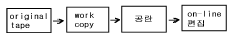
- 테잎가공
- 자막삽입
- OFF - LINE 편집
- 영상 및 음향효과 삽입
(정답률: 알수없음)
52. 전화회선을 통해서 일반 가정의 TV수신기를 정보센터의 컴퓨터와 결합하여 이용자의 요구에 대응하는 문자,도형 등의 화상정보를 TV 화면상에 제공하는 서비스는?
- 텔레텍스(teletex)
- 텔레텍스트(teletext)
- 정지화 방송
- 비디오텍스(videotex)
(정답률: 알수없음)
53. 아나운서의 시나리오 자막이나 출연자의 멘트를 글자자막으로 나타내는 장치는?
- 뷰 화인더
- 프럼프터
- 마이크로폰
- 스크램블
(정답률: 알수없음)
54. NTSC Color TV의 기본 구성 색이 아닌 것은?
- Red
- Yellow
- Green
- Blue
(정답률: 알수없음)
55. CATV(케이블TV) 방송시스템의 하행 주파수대역은 어느것인가?
- 5∼30[MHz]
- 5∼42[MHz]
- 30∼51[MHz]
- 51∼750[MHz]
(정답률: 알수없음)
56. 우리나라 CATV방송 시스템의 망(network) 구성요소는?
- 성형망
- 망형망
- 복합망
- 수지형망
(정답률: 알수없음)
57. 위성방송(DBS)을 수신하기 위해서 어떤 장치를 TV 셋트와 연결하여 시청할 수 있는가?
- FM 튜어너
- SET-TOP-BOX
- 아날로그 튜너
- M/W 안테나
(정답률: 알수없음)
58. 다음 중 촬영시 카메라 동작에서 피사체의 움직임을 따라 다니는 것은?
- Crain Shot
- Reaction Shot
- Follow Shot
- PAN
(정답률: 알수없음)
59. 차세대 위성통신 시스템의 기술발전 요소가 아닌 것은?
- 위성탑재 처리기술 (On board processing)
- 위성간 통신 LINK (ISL : Inter satellite link)
- 다중빔 위성시스템 (Multibeam satellite system)
- 10 ‾4 GHz 주파수 처리기술 (Frequency processing)
(정답률: 알수없음)
60. 객체(영상)기반 동영상 압축방식은?
- MPEG-1
- MPEG-2
- MPEG-4
- MPEG-7
(정답률: 알수없음)
4과목: 전자계산기 일반 및 방송설비기준
61. 방송법에 규정된 방송사업의 종류는?
- 공중방송사업, 종합유선방송사업, 위성방송사업, 자가방송사업
- 지상파방송사업, 종합유선방송사업, 위성방송사업, 방송채널사용사업
- 초단파방송사업, 라디오방송사업, TV방송사업, CATV방송사업
- 공중파방송사업, 유선방송사업, 위성방송사업, 방송전송망사업
(정답률: 알수없음)
62. 전파법의 목적으로서 가장 옳은 것은?
- 전파의 효율적인 이용 및 관리에 관한 사항을 정하여 전파이용 및 전파에 관한 기술의 개발을 촉진하여 전파의 진흥을 도모하고 공공복리에 증진
- 전파의 능률적인 이용을 확보함으로써 공공의 복리증진
- 전파의 합리적인 관리를 함으로써 공동의 복지를 증진
- 전파의 공평하고 능률적인 이용을 확보함으로써 전파 자원의 보호와 전파이용 및 전파에 관한 기술의 개발을 촉진하여 무선국의 발전을 도모하고 공공복리에 증진
(정답률: 알수없음)
63. 방송국의 송신설비를 이용하여 전파를 발사하고자 할때 송신공중선의 형식과 구성을 위하여 지켜야 할 사항을 열거한 것이다. 다음 중 전파법에서 규정하고 있는 것이 아닌 것은?
- 공중선의 이득이 높고 능률이 좋을 것
- 정합이 충분할 것
- 만족한 지향성을 얻을 수 있을 것
- 어느 방향으로든지 전파를 충분히 발사할 수 있을것
(정답률: 알수없음)
64. 마이크로프로세서에서 연산처리 한 후 연산 결과의 상태를 표시하는 레지스터는?
- 범용 레지스터
- 플레그 레지스터
- 콘트롤 레지스터
- 인덱스 레지스터
(정답률: 알수없음)
65. 정보통신공사의 종류에서 방송설비공사에 해당되지 않는 것은?
- 위성통신설비공사
- 방송국설비공사
- 방송전송설비공사
- 방송선로설비공사
(정답률: 알수없음)
66. 데이지 휠(daisy wheel)을 사용하는 프린터는?
- 활자식 라인 프린터
- 도트 매트릭스 프린터
- 레이저 프린터
- 잉크젯 프린터
(정답률: 알수없음)
67. 다음중 전파법에서 규정하고 있는 시설자란?
- 무선국의 실 소유자
- 문화관광부장관으로부터 무선국 시설권을 얻은자.
- 정보통신부장관으로부터 무선국의 개설허가를 받고 무선국을 개설한 자
- 전파방송관리국장으로부터 무선국의 개설허가를 받고 무선국을 개설한 자
(정답률: 알수없음)
68. Turn-around time이 가장 빠른 system은?
- 시분할 방식(time sharing system)
- 온라인 방식(on-line system)
- 실시간 방식(real-time system)
- 일괄처리 방식
(정답률: 알수없음)
69. 중계유선방송의 기본채널별 주파수대역에서 음악방송 대역은?
- 76MHz∼88MHz
- 88MHz∼108MHz
- 174MHz∼186MHz
- 186MHz∼198MHz
(정답률: 알수없음)
70. 방송법의 목적이 아닌 것은?
- 공공 복리의 증진
- 국민문화의 향상 도모
- 방송의 발전
- 종합적인 시책강구
(정답률: 알수없음)
71. 디지털 컴퓨터에서 특수한 응용을 위해 한 숫자에서 다음 숫자로 올라갈 때 한 비트만 변화되는 코드는?
- Gray코드
- BCD코드
- ASCII코드
- Excess-3코드
(정답률: 알수없음)
72. 컴퓨터의 성능을 비교할때 사용되는 것이 아닌 것은?
- MIPS
- ACCESS TIME
- WORD SIZE
- BPI
(정답률: 알수없음)
73. 10진법으로 한 자리수를 나타내려면 2진법으로 최소한 몇 개의 비트가 필요하겠는가?
- 2
- 4
- 8
- 10
(정답률: 알수없음)
74. 다음 중 O.S 의 종류가 아닌 것은?
- DOS
- UNIX
- VMS
- JCL
(정답률: 알수없음)
75. 정보통신공사업법에 있어서 공사의 종류중 방송국설비 공사가 아닌 것은?
- 영상· 음향설비
- 송출설비
- 마이크로웨이브(M/W)설비
- 방송관리시스템설비
(정답률: 알수없음)
76. 유료방송에 있어서 그 수신자가 설치하는 수신장치에 의하지 않으면 수신될 수 없도록 하기 위하여 신호파를 전기적으로 교환하는 것을 무엇이라고 하는가?
- 엑세스권(Access Zone)
- 블랭킷 에어리어(Blanket Area)
- 스크램블(Scramble)
- 칼라버스트(Color Burst)
(정답률: 알수없음)
77. 채널(channel)에 대한 설명으로 옳은 것은?
- 중앙처리장치의 지시를 받아 독립적으로 입출력 장치를 제어한다.
- 주기억장소를 각 프로세서에게 할당한다.
- 주기억장치와 중앙처리장치 사이에 위치한다.
- 목적프로그램을 주기억장치에 적재한다.
(정답률: 알수없음)
78. CAM (Content Addressable Memory)에 대한 설명으로 옳은 것은?
- CAM의 기억소자들의 내용은 파괴적으로 읽을 수 있어야 효율적이다.
- CAM은 직렬판독회로가 있어야 하므로 하드웨어 비용이 저렴하다.
- CAM은 주소를 사용하지 않고 기억된 정보의 일부분을 이용하여 자료를 신속히 찾는다.
- CAM은 주소를 사용해서 기억된 정보를 신속히 읽어낸다.
(정답률: 알수없음)
79. 국내의 아날로그 텔레비전 방송은 NTSC방식을 채용하고 있어 PAL방식보다 주파수를 효율적으로 사용하고 있는바 다음중 1채널간 점유주파수대폭은 얼마인가?
- 4.5MHz
- 6.0MHz
- 7.0MHz
- 8.0MHz
(정답률: 알수없음)
80. 그림에서 출력 X를 입력 A, B의 함수로 바르게 표시한 것은?
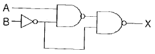
- X = AB
- X = A + B
- X = A'B + AB'
- X = AB + AB'
(정답률: 알수없음)